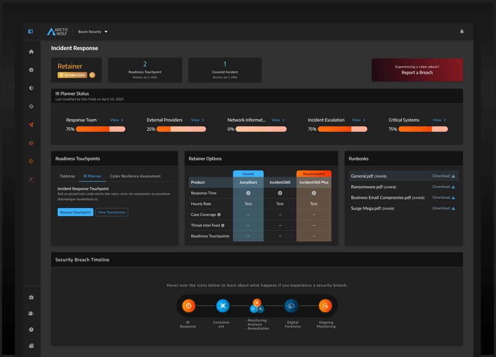

Work
Four case studies from ten years across cybersecurity, digital forensics, fintech, and AI. Each one covers the bet I made, the constraint I worked within, what I built, and what happened.

Incident360: Turning Incident Response Into a Recurring Product Line
Replaced Arctic Wolf's transactional IR model with a tiered retainer family. Arctic Wolf's fastest ARR ramp at product launch. IDC Market Note validated. Wolf on the Hill Innovation Award.
- 200%+ year-one ARR vs. projections
- 80%+ gross margins
- 67%+ product CAGR
Outrider: From Weeks to Minutes — and Knowing When to Stop
Built Magnet's triage tool, shipped a patent-pending CSAM detection algorithm, proved the concept — then made the call to integrate rather than keep scaling a standalone product the market wasn't structured to support.
- Named inventor — CSAM origin detection (P1280USP)
- iOS, Android, Windows, macOS triage
- Forensic Cross-Case Analysis shipped
Manulife: Digitizing Group Retirement Enrolment at Scale
Canada's first fully digital, mobile-responsive Group Retirement enrolment platform. Five delivery teams. AODA compliance. $2M+ annual cost reduction. Behavioural economics applied to contribution UX.
- $2M+ annual cost reduction
- First digital mobile-responsive enrolment in Canada
- 5 dispersed teams aligned across full stack
AI Adoption at Arctic Wolf: Shipping It, Not Just Talking About It
Built and led Arctic Wolf's internal AI program — competitive analysis agent, automated PRD workflows, VS Code enablement for non-technical PMs and designers — while simultaneously building Incident360.
- Competitive analysis agent built and deployed
- PRD workflow automation — 60-70% draft time reduction
- Full PM and design team enabled on AI tooling
Recognition
Want to talk about what I'd build for you?
I'm open to Director, Head, Lead, or Staff PM roles in B2B SaaS. Remote preferred, hybrid in GTA or Ottawa workable.